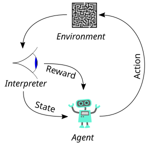
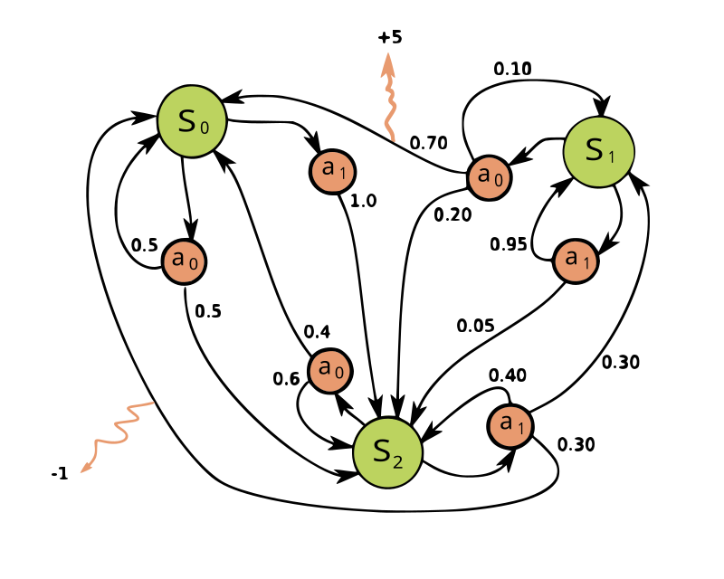

Chapter 01 · Foundations
Markov Decision Processes
1. Overview
Everything downstream in this course — value functions, dynamic programming, temporal-difference learning, policy gradients, TRPO, PPO, SAC — is a method for solving, approximating, or relaxing one object: the MDP.
Historically, MDPs grew out of the optimal-control and operations-research literature (Bellman, Howard, Puterman). Reinforcement learning inherits the same formalism but typically drops the assumption that the transition model \(P\) is known, replacing exact planning with learning from sampled interaction. Understanding the MDP carefully is what makes those later algorithms feel like inevitable engineering responses to a clear problem, rather than a pile of tricks.
At the highest level, an MDP answers three design questions:
- What can the agent observe? — the state space \(S\).
- What can the agent do? — the action space \(A\).
- How does the world respond, and how is that scored? — \(P\) and \(R\), plus \(\gamma\).
Given those pieces, a policy is a rule for choosing actions, and the return is the discounted sum of rewards along a trajectory. Reinforcement learning’s goal is to find a policy that maximizes expected return.
2. The agent–environment loop
Fix a discrete time index \(t = 0, 1, 2, \ldots\). At each step the agent occupies a state \(s_t \in S\), selects an action \(a_t \in A\), and the environment responds with a successor state \(s_{t+1}\) and a scalar reward \(r_{t+1} \in \mathbb{R}\). The interaction generates a trajectory

Two remarks about timing conventions (easy to get wrong when reading papers):
- Reward \(r_{t+1}\) is the reward received upon transitioning from \(s_t\) via \(a_t\) into \(s_{t+1}\). Some texts write \(r_t\) for the same quantity; the mathematics is identical if you are consistent.
- The agent’s decision at time \(t\) may depend only on \(s_t\) (Markov policies) or, more generally, on the history. Under the Markov property developed below, there is no loss of optimality in restricting to Markov policies for standard criteria.
Anything that cannot be changed arbitrarily by the learning algorithm is part of the environment — including reward computation. If you redesign the reward, you have changed the MDP. This is why “reward hacking” is an MDP-design failure, not an optimization failure: the agent correctly optimized the wrong objective.
3. Formal definition
A finite Markov Decision Process is a tuple \(\mathcal{M} = (S, A, P, R, \gamma)\) where:
\(S\) is a finite set of states;
\(A\) is a finite set of actions;
\(P: S \times A \times S \to [0,1]\) is a transition kernel with
\(\sum_{s'} P(s'\mid s,a) = 1\) for all \(s,a\);
\(R: S \times A \to \mathbb{R}\) (or \(R: S\times A\times S\to\mathbb{R}\))
is a (bounded) reward function;
\(\gamma \in [0,1)\) is a discount factor.

The transition kernel is often written \(P(s'\mid s,a)\) or \(T(s,a,s')\). When rewards depend on the successor as well, one writes \(R(s,a,s')\) and the expected reward for a state–action pair becomes
Many algorithms only need \(\mathcal{R}(s,a)\). In code and in our laboratory below we use a simple \(R(s')\) that depends on the landing cell (step cost, goal bonus, pit penalty) — a special case of \(R(s,a,s')\).
Continuous and hybrid MDPs replace finite sums by integrals and require measure-theoretic care (Borel spaces, regular conditional probabilities). The conceptual structure — state, action, kernel, reward, discount — is unchanged. We stay with finite MDPs for explicit equations; robotics will force function approximation later.
If \(|R| \le R_{\max}\) almost surely and \(\gamma \in [0,1)\), then for any trajectory the absolute return satisfies \(|G_t| \le R_{\max}/(1-\gamma)\). Hence expectations of return are well-defined and finite. This is the analytic reason discounting is not optional for infinite-horizon problems with nonzero rewards.
4. Components in depth
Click through the explorer, then read the expanded notes. Each symbol will reappear unchanged in Bellman equations, TD updates, and actor–critic gradients.
4.1 State space \(S\)
A state is an information summary sufficient for future prediction and control. In a gridworld, \(s = (x,y)\) may suffice. On a hexapod, a usable state typically stacks joint angles, joint velocities, torso orientation, and contact flags. If you omit velocity, two physically different situations share a label — the process is no longer Markov in that label (Section 8).
Discrete \(S\) enables tabular methods (one number per state). Continuous \(S\) forces function approximation. Partial observability yields a POMDP: the agent sees observations \(o_t\), not \(s_t\), and must track a belief \(b_t = p(s_t \mid o_{0:t}, a_{0:t-1})\). Belief-MDPs restore the Markov property at the cost of operating in a simplex of distributions.
4.2 Action space \(A\)
Actions may be discrete (\(\{\uparrow,\downarrow,\leftarrow,\rightarrow\}\)), continuous (\(a \in \mathbb{R}^m\) torques), or hybrid. The structure of \(A\) strongly constrains algorithm choice:
- Discrete \(A\): Q-learning / DQN-style \(\arg\max_a Q(s,a)\) is feasible.
- Continuous \(A\): \(\arg\max\) becomes an inner optimization; policy-gradient and actor–critic methods parameterize \(\pi_\theta(a\mid s)\) or a deterministic \(\mu_\theta(s)\) directly.
4.3 Transition kernel \(P\)
Stochasticity models slip, sensor noise folded into dynamics, opponents, and unmodeled disturbance. A common teaching kernel for gridworlds is the “intended with probability \(1-\varepsilon\), otherwise uniform among the other three directions” model. Writing the one-step backup explicitly:
with the usual wall-bump rule: moves into walls or out of bounds leave the agent in \(s\). Dynamic programming needs the entire table \(P(\cdot\mid s,a)\). Model-free RL never writes \(P\) down — it samples \(s' \sim P(\cdot\mid s,a)\) by acting in the world (or simulator).
4.4 Reward \(R\)
The reward is not “feedback about learning progress”; it is the definition of success. Sparse rewards (\(0\) almost everywhere, \(+1\) at a goal) make the objective clear but credit assignment hard. Dense shaping can speed learning but risks changing the optimal policy. A useful sanity check: if a human policy that “does the right thing” scores poorly under \(R\), the MDP is misspecified.
Beginners often conflate reward and value. Reward is local and instantaneous. Value is global: expected cumulative discounted reward from a state (or state–action) under a policy. A state can have negative immediate reward yet high value if it leads to large future reward — that tension is exactly what planning and TD learning resolve.
5. Policies
A stochastic policy is a map \(\pi: S \to \Delta(A)\), written \(\pi(a\mid s)\). A deterministic policy is a map \(\pi: S \to A\). A policy is stationary if it does not depend on absolute time \(t\).
Under a policy \(\pi\), the closed-loop process \((s_t)\) is a Markov chain with kernel
The joint law of a trajectory factorizes as
where \(\mu\) is the start-state distribution. Equation (5) is the probability that policy-gradient methods differentiate via the log-derivative trick — the \(P\) factors drop out of \(\nabla_\theta \log p_{\pi_\theta}(\tau)\). You do not need that yet; keep the factorization in mind.
6. Return and discounting
The return from time \(t\) is \[ G_t = \sum_{k=0}^{\infty} \gamma^{k}\, r_{t+k+1} = r_{t+1} + \gamma r_{t+2} + \gamma^{2} r_{t+3} + \cdots. \] The recursive form \(G_t = r_{t+1} + \gamma G_{t+1}\) is the seed of every Bellman equation in the next chapter.
6.1 Why \(\gamma < 1\)
Two independent reasons:
- Analytic. Without discounting, the infinite sum of a constant positive reward diverges. Policy comparison becomes undefined for continuing tasks.
- Economic / physical. Future reward is uncertain (battery, hardware failure, nonstationarity). Discounting is a simple model of impatience.
Effective horizon is often summarized as \(1/(1-\gamma)\) steps: with \(\gamma=0.99\), rewards ~100 steps ahead still matter substantially; with \(\gamma=0.9\), the weight \(\gamma^{20} \approx 0.12\) — twenty steps out is already faint.
6.2 Undiscounted episodic returns
For finite-horizon episodic tasks one may set \(\gamma=1\) and sum until termination. Equivalently, one can absorb terminal states into zero-reward self-loops and keep \(\gamma<1\). Both are common; be explicit which convention a paper uses when comparing numbers.
Calculator · assemble \(G_0\)
Interactive · optionalFix a toy reward sequence and vary \(\gamma\). Watch each discounted term and the total. This is the same arithmetic the gridworld lab uses on live trajectories.
7. The reinforcement learning objective
Let \(\mu\) be the distribution over start states. The performance of a policy is
where \(V^{\pi}\) will be defined properly in Chapter 02. Equivalently, in the average-reward criterion (less common in deep RL, important in continuing control),
This course focuses on the discounted criterion (6). An optimal policy \(\pi^*\) satisfies \(J(\pi^*) \ge J(\pi)\) for all \(\pi\). For finite discounted MDPs, an optimal deterministic stationary policy always exists. That theorem is why “act greedily with respect to \(Q^*\)” is not a heuristic — it is exact.
In a finite MDP with \(\gamma \in [0,1)\), there exists a deterministic stationary policy \(\pi^*\) that is optimal for \(J(\pi)\). Moreover, the optimal action-value function \(Q^*\) characterizes it via \(\pi^*(s) \in \arg\max_a Q^*(s,a)\). (Proof sketch in Chapter 02 via the Bellman optimality operator being a contraction.)
8. The Markov property
The state process is Markov if \[ P(s_{t+1}\mid s_t,a_t,s_{t-1},a_{t-1},\ldots,s_0,a_0) = P(s_{t+1}\mid s_t,a_t). \] Informally: the future is independent of the past given the present state and action.
This is an assumption about the chosen representation, not about physics. The true universe may be Markov at the level of microstate; your sensor vector may not be. When the assumption fails:
- Bellman equations written in \(s\) are simply false for the real process.
- TD targets become biased in a structural way (not just estimation noise).
- Policies that look optimal in the POMDP belief space cannot be expressed as functions of the raw observation alone.
Practical repairs: augment with velocity / history / frame stacks; learn latent Markov states; use recurrent policies. Frame-stacking in Atari is exactly “restore approximate Markovness by expanding \(S\).”
Insufficient state
Position only — velocity hidden.
Same label, opposite futures → non-Markov.
Sufficient state
Position and velocity.
Future well-defined from current features.
9. Episodic vs continuing tasks
An episodic task has absorbing terminal states (goal reached, robot fallen, game over). After termination, the agent resets. Monte Carlo methods need episodes: they wait for \(G_t\) to be fully observed.
A continuing task never ends (thermal control, always-on locomotion). Pure Monte Carlo is unavailable; TD and discounting become essential. Many “episodic” simulators are continuing MDPs with artificial time limits — truncation is not the same as termination, and conflating them biases value estimates (bootstrapping from the truncated state is the usual fix).
10. Analysis notes (deeper pass)
10.1 Occupancy measures
The discounted state occupancy under \(\pi\) is
Then \(J(\pi) = \sum_s d^{\pi}(s)\sum_a \pi(a\mid s)\,\mathcal{R}(s,a)\). Policy-gradient theorems are statements about expectations under \(d^{\pi}\). Off-policy learning is hard partly because data is drawn from \(d^{\beta}\) for a behavior policy \(\beta \neq \pi\).
10.2 Deterministic vs stochastic optimality
For the discounted criterion in a finite MDP, determinism is enough: there is an optimal deterministic policy. Stochastic policies still matter for learning (exploration), for games with hidden information, and for entropy-regularized objectives (soft optimality in SAC), where the optimum of the modified objective is deliberately stochastic.
10.3 Model-based vs model-free foreshadowing
- DP
- Known \(P,R\). Sweep states. Exact Bellman backups. Chapter 03.
- MC
- Unknown model. Full returns from complete episodes. High variance.
- TD
- Unknown model. Bootstrap after one (or \(n\)) steps. Chapter 04.
All three attack the same fixed point — the value function of an MDP. They differ only in how they estimate the Bellman expectation.
Your simulator (MuJoCo, Newton, custom) is a sample access to \(P\). It does not hand you the probability table. That single fact is why robotics RL is model-free or learned-model-based, never classical DP on the true kernel. State design (Markovness) and reward design (objective fidelity) remain the highest-leverage engineering choices — more than optimizer hyperparameters.
11. Laboratory · finite gridworld MDP
The following 5×5 grid is a concrete finite MDP. Use it to verify definitions: read off \(s\), choose \(a\), observe a sample from \(P(\cdot\mid s,a)\), record \(r\), and recompute \(G_0\). Prefer reading Sections 1–10 first; the lab does not replace the theory.
- Step reward \(-0.1\); goal \(+10\); pit \(-5\); walls block and bounce.
- Optional slip: \(\varepsilon=0.2\) as in equation (3).
- Keyboard: arrows / WASD when this section is on screen.
Interactive gridworld
Samples from \(P\) · live \(G_0\)Transition ledger
Exact \(P(\cdot\mid s,a)\) for the current kernel, then the sample.
Take an action to expand the one-step kernel and reward.
Episode trace
Running \(G_0\)
Empirical estimation of \(P\)
From interior cell \((2,1)\) with intended action Right and slip enabled, the true mass on the intended successor is \(0.8\). Sampling approximates that mass by relative frequency — the law of large numbers in miniature.
No samples yet.
12. Worked calculations
Consider \(\gamma = 0.9\) and rewards \((-0.1,-0.1,-0.1,+10)\) along a path into the goal. Compute \(G_0\) by hand.
This is one sample of return for one trajectory. The objective \(J(\pi)\) averages over all trajectories induced by \(\pi\) and \(P\). Value functions (next chapter) organize those averages state by state.
-
Trajectory:
(0,0) →R (1,0) →R (2,0) →U … → GOAL - \(r_1=-0.1,\; r_2=-0.1,\; r_3=-0.1,\; r_4=+10\)
- \(G_0 = \sum_{k=0}^{3} \gamma^k r_{k+1}\)
- Substitute \(\gamma=0.9\): \(-0.1 + 0.9(-0.1) + 0.81(-0.1) + 0.729(10)\)
- Expand: \(-0.1 - 0.09 - 0.081 + 7.29\)
- Result: \(G_0 = 7.019\) (one Monte Carlo sample of return).
13. What follows
The MDP tells you the rules. It does not yet tell you how good a situation is. Chapter 02 introduces value functions \(V^{\pi}\) and \(Q^{\pi}\), derives the Bellman expectation and Bellman optimality equations from \(G_t = r_{t+1}+\gamma G_{t+1}\), and shows why \(Q^*\) yields an optimal policy by greedy readout.
See also
- Chapter 00 · Why — what came before MDPs and why it failed.
- Puterman, Markov Decision Processes — classical reference.
- Sutton & Barto, Ch. 3 — standard RL treatment of MDPs.
- Course notes file:
course-notes.txtin this repository.
Previous
← Why MDPs
Next chapter
Value functions & Bellman equations
How good is a state? How does that recurse?